X
Menú
Home
Plataforma Online
Cursos
Word
Excel
Excel Avanzado
Power Point
Internet y Redes Sociales
Windows 10
Photoshop CC
CorelDRAW
Prezi Next
Ayuda
Evaluazión y certificación
Contacto

Photoshop CC
UNIDADES
1. Introducción / Herramientas básicas
2. Herramientas de creación
3. Trabajar con Capas
4. Capas de Ajuste
5. Selecciones y Máscaras
6. Herramientas de corrección
7. Filtros
8. Herramientas de transformación y otros ajustes
9. Otros ajustes y configuraciones del documento
1. Introducción / Herramientas básicas
1.1
¿Qué es photo y para qué sirve?
1.2
Área de trabajo
1.3
Crear y configurar un documento nuevo
1.4
Colocar elementos
1.5
Controles de transformación de objetos
1.6
Herramienta Zoom y mano
1.7
Guardar y abrir archivos
1.8
Modos de color
2. Herramientas de creación
2.1
Crear formas I
2.2
Crear formas II
2.3
Relleno degradado
2.4
Relleno solido - Bote de pintura
2.5
Insertar textos
2.6
Pinceles
3. Trabajar con Capas
3.1
Creación y trabajo con capas
3.2
Ordenar y agrupar capas
3.3
Modos de fusión
3.4
Estilos de capa I
3.5
Estilos de capa II
4. Capas de Ajuste
4.1
Color uniforme y degradado
4.2
Motivos
4.3
Brillo y Contraste
4.4
Niveles
4.5
Curvas y Exposición
4.6
Intensidad y Equilibrio de Color
4.7
Tono y Saturación
4.8
Blanco y Negro y filtro de Fotográfica
4.9
Mezclador de Canales
4.10
Corrección Selectiva
4.11
Invertir, Posterizar y Umbral
5. Selecciones y Máscaras
5.1
Herramientas de selección marco rectangular y elíptico
5.2
Herramienta de selección rápida
5.3
Varita Mágica
5.4
Lazo y Lazo poligonal
5.5
Lazo Magnético
5.6
Invertir y reutilizar selecciones
5.7
Máscaras I
5.8
Máscaras II
5.9
Dureza, opacidad y tamaño del pincel para crear máscaras
5.10
Máscara de degradado
5.11
Máscaras vectoriales – Trazados
5.12
Perfeccionar bordes – Selección de pelo
6. Herramientas de corrección
6.1
Tampón de Clonar
6.2
Pincel Corrector Puntual
6.3
Pincel Corrector
6.4
Parche
7. Filtros
7.1
Galería de filtros
7.2
Desenfocar
7.3
Distorsionar
7.4
Enfocar
7.5
Estilizar
7.6
Interpretar
7.7
Pixelar
7.8
Ruido
7.9
Filtro paso alto para enfocar imágenes
7.10
Punto de fuga
7.11
Licuar – Retoque de imagen
8. Herramientas de transformación y otros ajustes
8.1
Herramientas de Transformación
8.2
Perspectiva
8.3
Deformación
9. Otros ajustes y configuraciones del documento
9.1
Modificar tamaño de lienzo e imagen
9.2
Guardar en formato PDF
9.3
Exportar Imagen